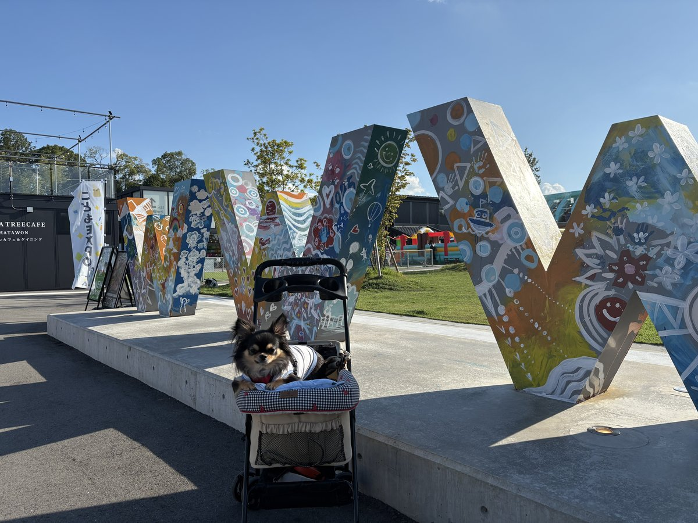

WHATAWON（ワタワン）
大阪府岸和田市岸の丘町1丁目32-1
掲載時点の料金です。最新の料金は公式サイトでご確認ください。
備考・犬連れでのポイント
2024年5月にオープンした敷地約29,000平米の滞在型エンターテインメントモール。
館内のほとんどのエリアが犬同伴可で、フードホールのグルマンズや物販店もリードを付けたまま入れる店が多く、飲食店のテラス席も同伴可。
ただし入店の可否は店舗ごとに異なるため、入口の表示を確認のこと。
館内の移動はリード・ペットカート・抱っこのいずれかで、室内で排泄のコントロールが難しい場合はマナーおむつ着用、いすやソファに乗せる時はマットを敷く、皿やカトラリーを犬に使わない、排泄物は専用ゴミ箱へ、といったペットルールあり。
来館の条件は狂犬病予防注射と混合ワクチンの接種済みで、混合ワクチンは抗体価検査証明書で代えられる。
ほかに、狂犬病・混合ワクチン以外の感染症にかかっていないこと、発情期・ヒート・妊娠中でないことも条件で、人や他の犬に攻撃的になる恐れのある犬は入場不可。
館内ではリードを短く持つこと。ドッグランは屋外2面と屋内1面で、体重10kgでエリアが分かれる。
飼い主1人につき2頭まで、中学生以上のみ利用でき、ヒート中の犬と攻撃性があると判断された犬は利用不可。
ラン内では人も犬も飲食が禁止で、犬に与えてよいのは水のみ。屋外は24時間利用可、屋内は小型犬専用でマナーおむつ着用が必須。
利用にはWan!Passアプリの登録とチケット購入が必要で、料金は平日1時間550円、土日祝1時間1,100円から。
施設の営業時間は10:00〜22:00だが店舗により異なり、年末年始は休業の場合あり。
入場自体は無料だが、期間限定のイベント開催中は有料になることがある。
駐車場は323台で平日無料、土日祝は入庫30分まで無料・60分200円・最大800円だが、18:00〜24:00は無料。
年末年始・ゴールデンウィーク・お盆の期間は平日でも土日祝料金になる。
ほかに施設内で8,000円以上の買い物、もしくは京町湯屋SOKOTOTOの入浴でも無料になる。
混雑時は隣接する蜻蛉池公園の駐車場が案内される。館内は完全キャッシュレスで現金は使えない。
わんちゃん用のお掃除ステーションやリードフック、ペット用品の販売店あり。
2階には完全無人のセルフドッグスパ「Self Dog Spa Salud!」があり、飼い主が自分で洗うセルフシャンプー形式でシニア犬から大型犬まで利用でき、LINEで予約から決済まで完結する。
料金はスタンダードバスが60分1,350円、マイクロバブルバスが60分3,800円。
フードホールのグルマンズには犬用の無添加手作りごはんを売る「WHATA!WAN!BANA!kitchen」があり、冷凍自動販売機で買って電子レンジで温めるセルフ形式で定休日は無い。
温浴施設の京町湯屋SOKOTOTOは、犬を同伴できるのは宿泊棟の「はなれ」だけで、浴場には連れて入れない。
はなれは愛犬と一緒に泊まれる宿泊施設で、24時間利用できるドッグランが付き、ペットシーツとフードボウルの無料貸出もある。
そのSOKOTOTOの入口には冷暖房・電子ロック・見守りカメラ付きの犬用待機スペース「WanPod」があり、入浴や食事の間だけ犬を待たせられる。
料金は1分30円で、専用アプリの会員登録とQRコードでの解錠が必要。
ペットホテルや一時預かりではなく、利用中の管理は飼い主が行う。
敷地内にはペット同伴可のRVパークとトレーラーハウスの宿泊施設もある。
最新情報は公式サイトで確認のこと。